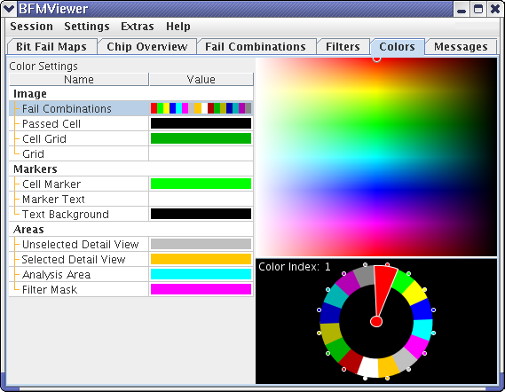

Colors
The Colors tab lets you specify colors for the various elements the BFM Viewer uses to display, structure, and annotate bit fail maps.

The tab consists of the Color Settings list and a color palette to the right of it. If the Fail Combinations color setting is selected, a color wheel is displayed as well.
All changes in this tab become effective instantly.
Color Settings
This list contains all elements that can be colored. It consists of these columns:
- Image: The element type for which you choose the color. The available
image types are:
- Fail Combinations: The various combinations of failures in different layers that are listed in the Fail Combinations tab. Instead of a single color, this element is assigned a color scheme using the color wheel (see below).
- Passed Cell: Cells in a bit fail map that have no failure on any layer.
- Cell Grid: The color of the cell grid that can be displayed using the command in the shortcut menu of a bit fail map.
- Grid: The color of the overlay grid lines that you can specify in the Grid section of the Global Settings window.
- Cell Marker: Markers for marked and failed cells in a bit fail map.
- Marker Text: The text in the address labels for the cell markers.
- Text Background: The background of the address labels of the cell markers. (This color is used transparently.)
- Unselected Detail View: The border of a detail view in the Chip Overview tab that is not currently selected.
- Selected Detail View: The border of a detail view in the Chip Overview tab that is currently selected.
- Analysis Area: The specified analysis area in the Chip Overview tab. (This color is used transparently.)
- Filter Mask: The color applied to all areas that are hidden by the
active filter rules. (Depending on the filter mode used, this color maybe applied
transparently or opaquely.)
Clicking any color swatch for a category lets you choose different color (or color scheme, in the case of the fail combinations) for that category
- Value: The color (or color scheme, in the case of the fail
combinations) assigned to the element.
Clicking any color swatch for an element lets you choose different color for that element from a shortcut menu.
Color palette
The color palette displays all colors available for the elements in bit fail maps. The current color of the selected element is indicated by a small circle.
Clicking anywhere in the palette sets the color of the current element (or the current part of the color wheel, if you are working with it) to the color on which you have clicked.
Color wheel
The color wheel lets you specify color schemes for the fail combinations. It is displayed when the Fail Combinations value is selected.
There are two forms of the color wheel, a discrete one (left) and a continuous one (right):

In the discrete form, each color can be set independently of the others. In the continuous form, the colors are assigned automatically as a blend for which you specify the start and end colors, and optionally intermediate anchor colors.
Which of the two forms of the color wheel is displayed depends on the color scheme that has been chosen for the fail combinations:
- If the topmost color combination is chosen, the discrete color wheel is shown.
- If any of the other combinations are chosen, the continuous color wheel is shown.
Clicking any of the color dots around the periphery of the color wheel allows you to specify the color at that point of the wheel.
Double-clicking a segment in the continuous wheel adds a color dot to that segment; double-clicking again removes it.
Functional changes
- Introduced before SmarTest 6.3.2